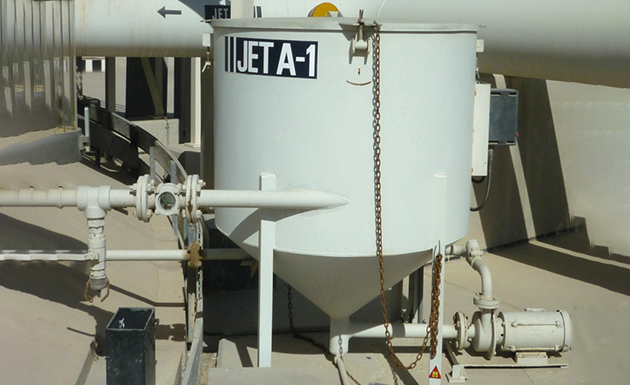
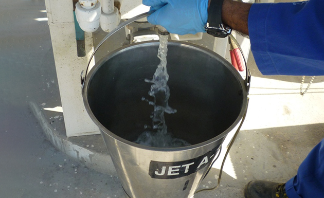
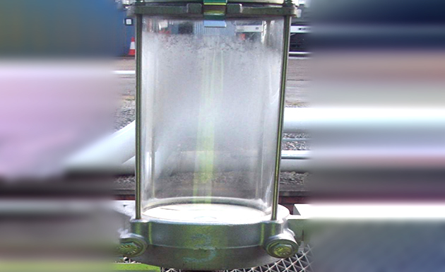

Session 7.6
Sampling Terminology
key
- Top Sample
- Surface of the fuel
- Skim Sample
- Upper Sample
- Middle Sample
- Suction Level Or Outlet Sample
- Lower Sample
- Bottom Sample
- Sump Sample
- Top Sample - A sample obtained 150 mm (6 in) below the top surface of the liquid.
- Surface Of The Fuel
- Skim Sample - a spot sample taken from the surface of the liquid, also referred to as a surface sample
- Upper Sample - A spot sample that is taken at a level of 1/6 of the depth of liquid below the top surface
- Middle Sample - A spot sample taken at a level of ½ (one half) of the dept of liquid below the top surface
- Suction Level or Outlet Sample - A sample taken at the lowest level from which liquid hydrocarbon is pumped from the tank, also referred to as an Outlet Sample
- Lower Sample - a spot sample taken at a level of 5/6 of the depth of liquid below the top surface
- Bottom Sample - is a spot sample taken from close to the bottom of a tank or container. Bottom sample can only be drawn using a dedicated bottom sampler; it cannot be drawn using a conventional sampler.
- . Sump Sample - A sample is taken from a purposely designed low-point sump in the system
- a sample obtained by combining a number of spot samples in defined proportions to obtain a sample representative of the bulk product.
- A composite sample is prepared from individual samples taken from
- Upper
- Middle
- Lower
- A sample is obtained by combining a number of composite or all-level samples from more than one tank in defined proportions so as to obtain a sample representative of the bulk of the same material.
- Multiple Tank Composite can be
- Simple Weighted Multiple Tank Composite – where each tank sampled is represented in the final sample by a volume in the same ratio as that tank volume is to the total measure of all the tanks
- Unweighted Composite (also referred an ‘Aggregate Sample’) where each tank sampled is represented by an equal volume in the made composite, irrespective of the volume contained and measured within each tank
- Batch or Parcel Weighted Composite: where account is taken of the volumes that will actually be moved from each tank as a batch is made up.
- The method of preparing a composite sample should be documented and transparent at each stage of the logistic chain
- For marine vessels, multiple tank composite samples from a maximum of seven (7) compartments may be combined
- The purpose of limiting the number of compartments is to maximise the detection of contamination
- Where more than one MTC is required, either the MTC composition should reflect the intended shore tank discharge plan or divide the total volume on board the vessel as evenly as possible between the MTCs.
- A sample is taken from a purposely designed low-point of the tank, container or pipeline usually taken to check for water, sludge, scale, etc. usually taken from a tank using a FAST FLUSH SYSTEM 
- Line Sample:Sample obtained from a line sampling point, drawn while the product is flowing
- Sampling point consists of a MINIMUM 6MM,/ line which permits a sample to be drawn while the product is flowing
- Line sample is NOT a running sample. 
- A sample is obtained with an apparatus which accumulates the sample while passing in both directions through the total liquid height, excluding any free water.
- Note: For conventional samplers, it should be verified that the container is not full when it returns to the liquid surface. Not to be confused with line sample or all-level sample.
- Sample obtained from the water draw-off or drain point of a storage or vehicle tank or filter vessel
- Drain line samples are taken from a drain or line sampling point specifically installed for the purpose, such as from a:
- Refueller tank
- Filter separator
- Hydrant line
- Transfer line
- Closed ‘Glass Jar’sampling systems are preferred for daily tank & filter sump and product receipt sampling
- Enable larger, more represented sample for examination
- Simplifies operation
- Better assurance that job will be properly done
- Improved efficiency
- Safety and hygiene improved by elimination of manual drawing and handling of samples
- epending on facilities layout, one system can serve multiple filters or tanks
- They need to be cleaned regularly (inside and out)
- Contaminants stick to glass on the inside of the visijar
- General dirt builds up on the outside, particularly on the apron
- They should therefore be easily accessible, and to lid not fixed/locked. 
- Only clean glass, metal, or plastic containers COMPATIBLE WITH THE AVIATION FUEL to be stored shall be used for laboratory testing or retention samples (ASTM D4306)
- Steel containers should be of a suitable design, preferably INTERNALLY LINED with a suitable epoxy coating. Aluminium (unlined) containers are also suitable.
- VISUALLY check the containers to confirm their suitability.
- For tests such as copper corrosion, silver corrosion, and microbiological, only DARK GLASS BOTTLES with glass or polyethene stoppers shall be used to prevent adverse action of sunlight on these properties.
- Clear, clean (inside and outside) glass bottles of at least 1 litre capacity with wide necks and caps or lids should be used for appearance/visual Checks and Control Checks.
- The bucket used should be manufactured from good quality stainless steel, aluminium or lined with white enamel and equipped with a bonding cable and clip.
- If white enamel buckets are to be used, they should have an earthing rod inside the bucket connected to a bonding cable, or the enamel lining shall be no thicker than 2mm (0.8 inches) in order to allow static charges to dissipate. See ASTM Manual 5 for white bucket test procedure.
- Closed-circuit samplers or inline samplers (”Visijars”) are preferred sampling containers for most visual checks. They should be easy to clean, and the glass should be of a type that does not deteriorate in sunlight.
- These shall be Metal Containers as described for Laboratory Testing.
- Containers for transporting samples by air shall be of an International Civil Aviation Organisation (ICAO) approved design and shall be dispatched following the latest edition of the "ICAO Technical Instructions for the Safe Transportation of Dangerous Goods by Air".
- Sampling should be done from the top first, then the middle etc, in order to not disturb the liquid column. Sample containers must be clean & dry
- Containers, even when new, should be carefully rinsed at least three times with the aviation fuel to be sampled (in accordance with ASTM D4306)
- Rinsing three times is particularly important in the case of water separation characteristic testing because water separability may be seriously degraded by even trace contamination with polar or surfactant materials
- Ropes and/or sample vessels must be of non-static generating material; man-made fibres (like polyester, nylon etc) must not be used.
- Natural fibre cords/ropes (cotton, linen, and jute) are OK if in good condition
- Natural fibre ropes and bottles with corks are not recommended because of the potential for sample contamination – specialist samplers with stainless steel winders preferred
- Metal apparatus must always be bonded to the tank first
- Sampling apparatus to be rinsed three times with product to be sampled
- Sampling lines to be flushed with a minimum quantity as locally defined
- The data is only as good as the analysis, and the analysis is only as good as the sample.
- Take samples from the worst place at the worst time………if that’s OK then everything else is better!!!
- Producing a C&B sample from the worst place at the worst time automatically ensures that an effective flush, displacing all contaminants, is performed.
All Level Sample
when an apparatus accumulates the sample while passing in one direction only through the total liquid height, excluding any free water. To be sure that the sample obtained is truly all level – the container should not be full when it returns to the liquid surface
Composite Sample:
Multiple Tank Composite Sample (MTC): Usually from multi-compartment ships/barges
-
Multiple Tank Composite Sample (MTC):
A sump is the lowest point(s) in a storage tank or filters purposely designed to collect water or particulate
Sump Sample:
Running Sample
Drain Line Sample:
Closed Sampling
The process of taking samples within a tank under closed conditions which does not permit the release of any tank contents or vapour into the atmosphere
Closed Sampling Systems
Sample Containers For Laboratory Testing
Sample Containers For Field Testing
Clear Glass Bottles
Buckets
Closed Circuit Samplers
Retention Sample Container
Packaging for Air Transport
4.8 Sampling Precautions
Sampling - Summary
Guiding Principles….